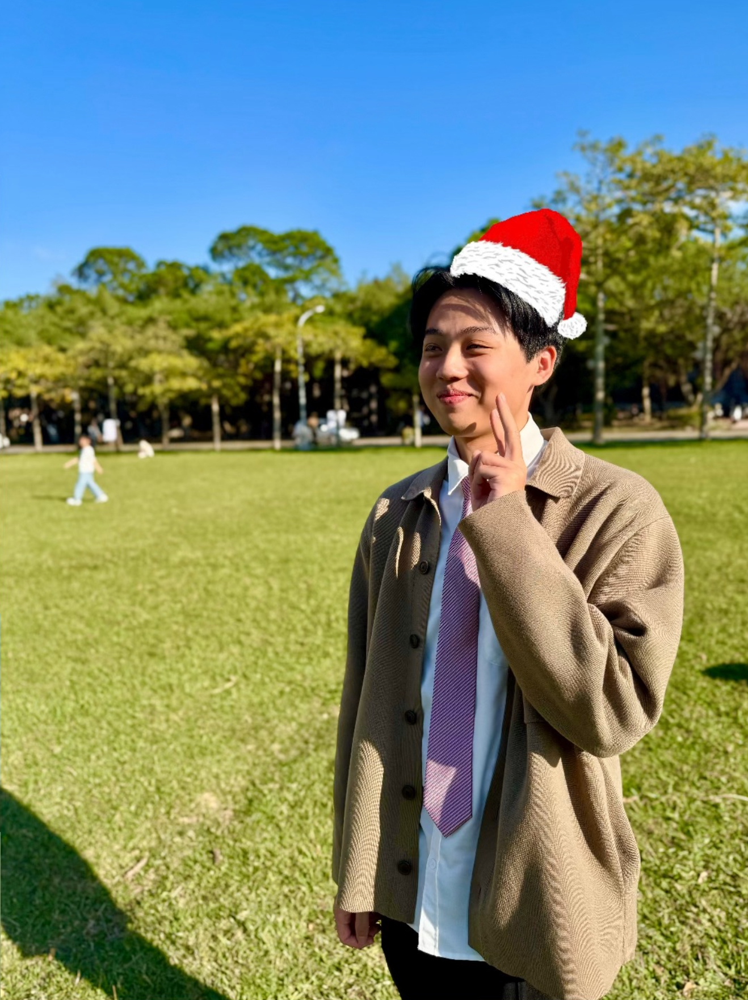

I'm Tzu-Hsiang Tu — I design navigation stacks, sensors, and control systems that turn theory into working hardware. Currently researching CMOS-MEMS sensing at NTHU, formerly leading the navigation team through two Eurobot world finals.

I studied Power Mechanical Engineering at National Tsing Hua University because I wanted to understand systems end to end — the mechanics, the electronics, and the intelligence that ties them together. That curiosity pulled me into robot navigation, control theory, and sensor design, and it's what I'm carrying into graduate research on AI and autonomous systems.
I like problems that don't have a clean answer yet — a robot that has to localize itself in a noisy arena, a sensor that has to sense a range it wasn't built for. Vice Team Leader and Navigation Team Leader at DIT Robotics taught me that good engineering is equal parts rigor and patience: test until the failure mode is boring.
Research is where I get to sit with a question longer than a competition deadline allows. Right now that means sensors — how to make them see more, with less.
Joining the Nano/Micro Engineering Analysis and Fabrication Lab under Prof. Hung-Yin Tsai to continue work at the intersection of MEMS sensing and intelligent systems.
Combining capacitive and Pirani sensing mechanisms in a single CMOS-MEMS device to widen usable pressure range beyond either mechanism alone.
Exhibited sensor and robotics work at IEEE MEMS 2025 and SEMICON Taiwan 2025, and the Taiwan Automation Intelligence and Robot Show.
Where I want to take this next: learning-based navigation and perception for robots operating in unstructured, dynamic environments.
Autonomous robot navigation stack competed against international teams at the Eurobot world final.
Returned to the world final with an improved localization and path-planning system.
National mechatronic design competition, recognized for sensor integration and control design.
Led navigation stack development — localization, path planning, and obstacle avoidance for autonomous robots competing at Eurobot 2024 (World 5th) and 2025 (World Top 16).
Designed a mechatronic system combining sensor integration and control logic to solve the competition's open-ended design challenge.
Investigated a pressure sensor combining capacitive and Pirani sensing mechanisms to extend usable sensing range, with simulation and circuit-level analysis.
Open to research collaborations, robotics teams, and hard problems worth solving.